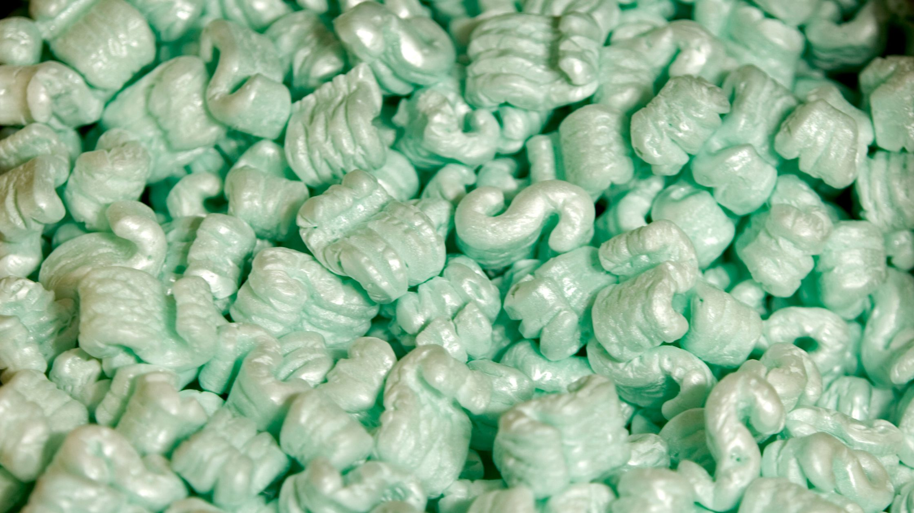
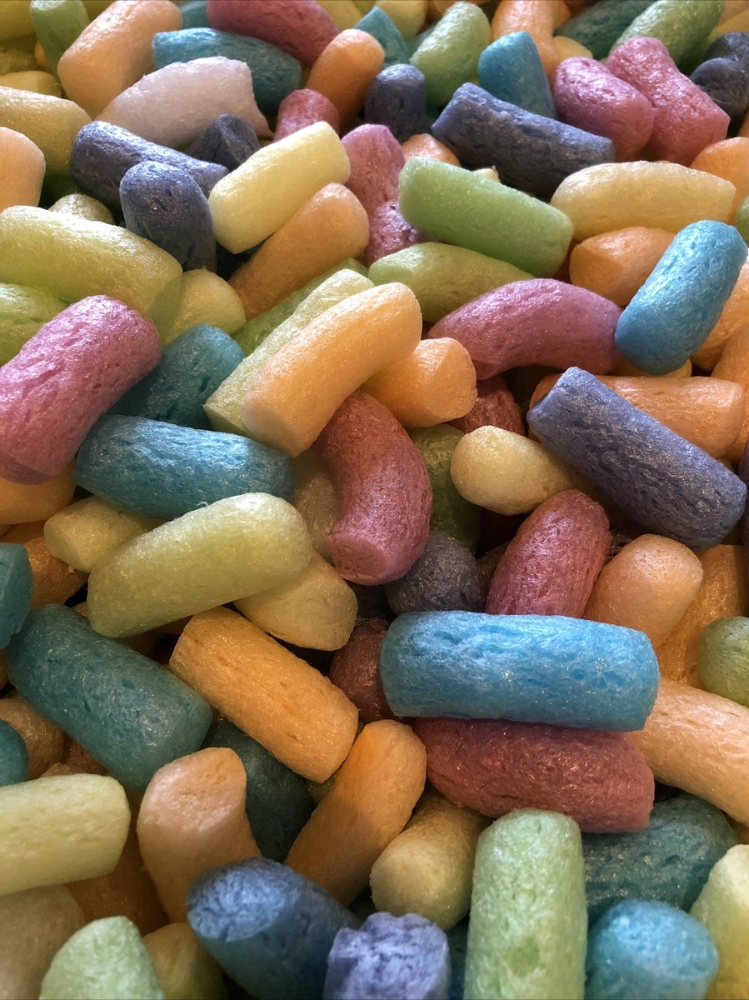
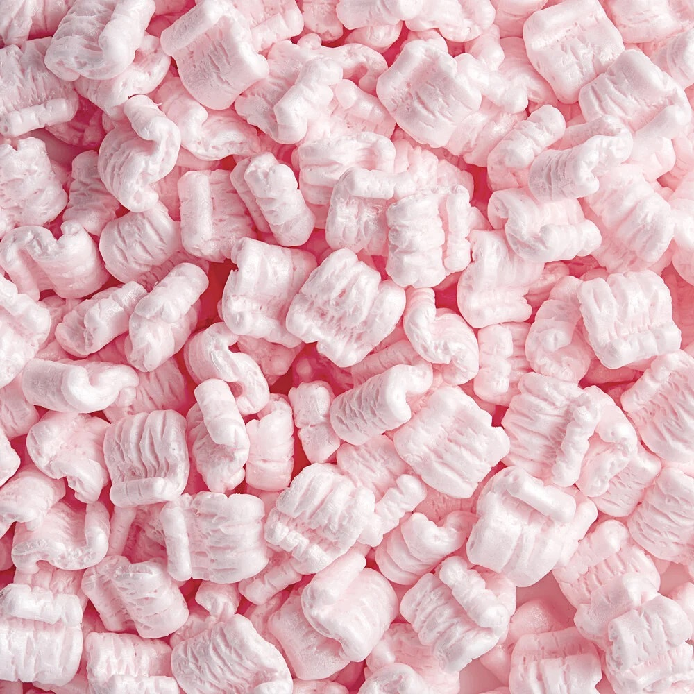

These are the traditional white, polystyrene packing peanuts, cylindrical and pretty!

These green packing peanuts are made from biodegradable starch, making them an eco-friendly alternative! This funky shape increases springiness and protection.

These multi-coloured packing peanuts are often used for promotional purposes or to add a fun element to packaging.

These anti-static packing peanuts protect electronic components from static electricity during shipping. They're also pink!